① 1921年7月23日至8月初中国共产党第一次全国代表大会在上海法租界望志路106号（现兴业路76号）和浙江嘉兴召开。选举陈独秀为中央局书记。
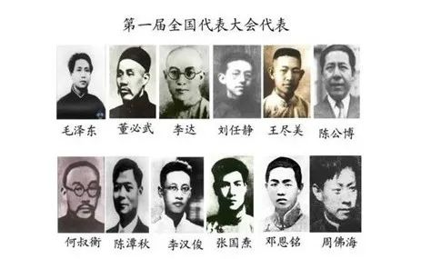② 1922年7月16日至23日，中国共产党第二次全国代表大会在上海南成都路辅德里625号召开。出席会议的代表共12名（有一名代表姓名不详），代表全国195名党员。 选举陈独秀为中央执行委员会委员长。
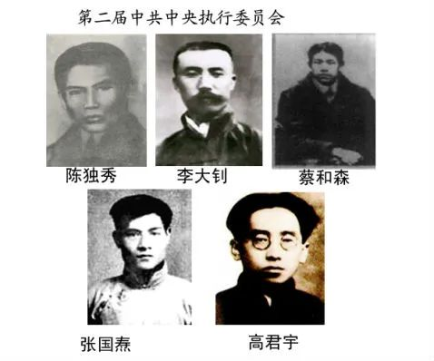③ 1923年6月12日至20日，中国共产党第三次全国代表大会在广州东山恤孤院31号（现恤孤院路3号）召开。 选举陈独秀为中央执行委员会委员长。
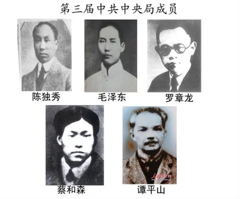④ 1925年1月11日至22日，中国共产党第四次全国代表大会在上海召开，中国共产党第四届中央执行委员会第一次会议选举陈独秀为中国共产党中央执行委员会总书记兼中央组织部主任，彭述之为中央宣传部主任，张国焘为中央工农部主任，蔡和森、瞿秋白为中央宣传部委员，以上5人组成中央局。
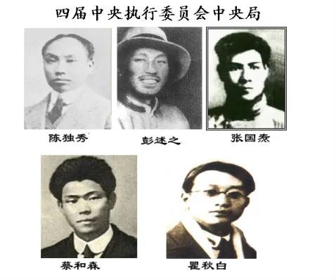⑤ 1927年5月9日，中国共产党第五次全国代表大会在武汉（汉口）举行，选举陈独秀为中央总书记。
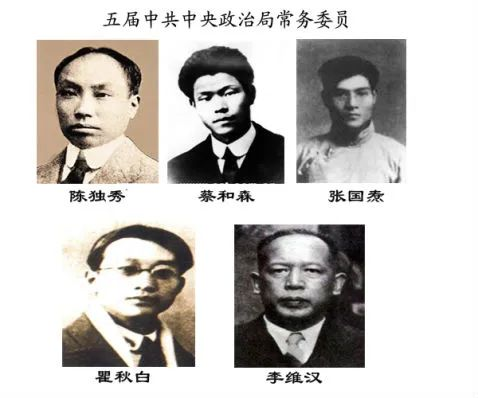⑥ 1928年7月19日在苏联莫斯科克里姆林宫举行中国共产党第六届中央委员会第一次全体会议，选举向忠发为中共中央政治局主席兼中央常委主席。
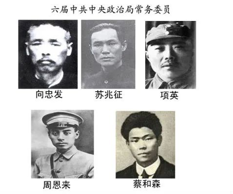⑦ 1945年6月19日中共第七次全国代表大会选举产生中共第七届中央委员会，选举毛泽东为中央委员会、中央政治局主席。
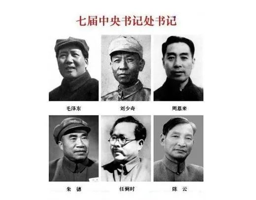⑧ 1956年9月28日中共第八次全国代表大会选举产生中共第八届中央委员会。选举毛泽东为中央委员会主席，邓小平为总书记（主要负责书记处的工作，并不是党的最高领导人）。
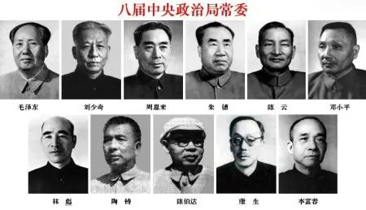⑨ 1969年4月28日中共第九次全国代表大会选举产生中共第九届中央委员会，选举毛泽东为中央委员会主席。
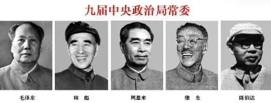⑩ 1973年8月30日中共第十次全国代表大会选举产生中共第十届中央委员会。
选举毛泽东为中央委员会主席（1973年8月中共十届一中全会选举产生。1976年9月9日逝世。）
1976年10月7日中央政治局决定华国锋为中央委员会主席。1977年7月中共十届三中全会追认。）
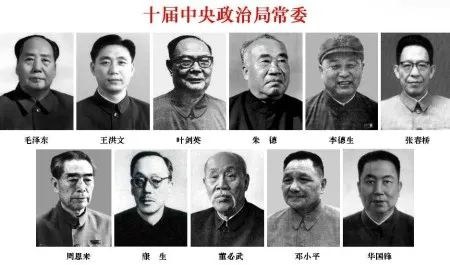十一 1977年8月中共十一届一中全会选举华国锋为中央委员会主席。1981年6月中共十一届六中全会同意华国锋辞去党中央主席和中央军委主席职务的请求）
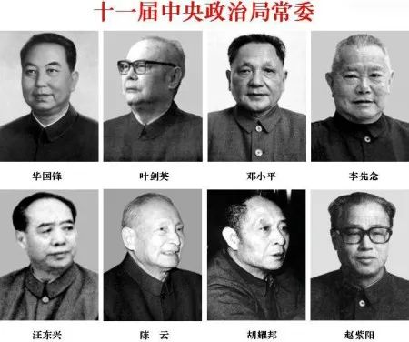十二 1982年9月12日中共第十二次全国代表大会选举产生中共第十二届中央委员会，选举胡耀邦为中央委员会总书记（1987年1月十二届七中全会辞职），邓小平为中央军事委员会主席。
第十二届中央政治局党委↓
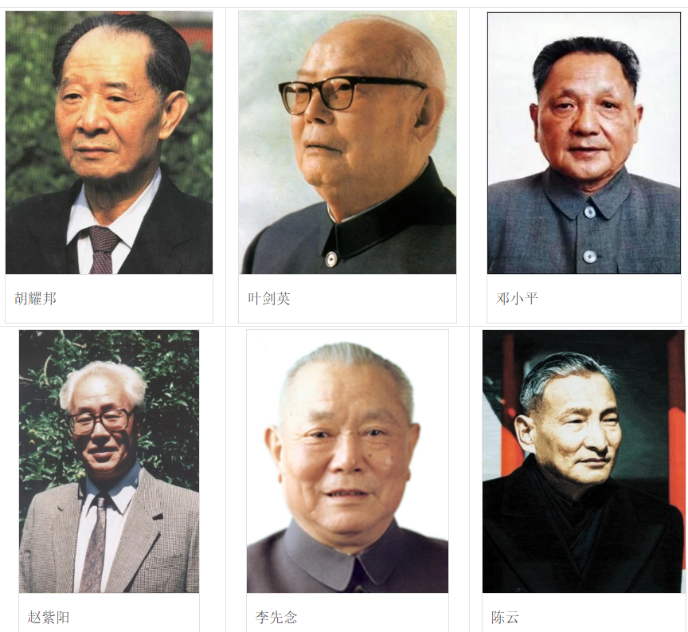十三 1987年11月2日在北京举行中国共产党第十三届中央委员会第一次全体会议，选举赵紫阳为中央委员会总书记（1987年11月—1989年6月），邓小平为中央军事委员会主席，1989年11月十三届五中全会选举江泽民中共中央总书记、中央军委主席。
第十三届中央政治局党委↓
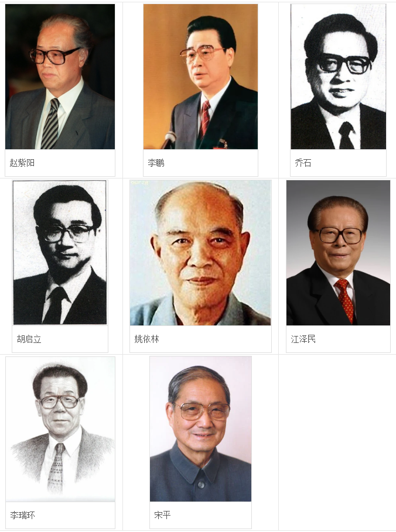十四 1992年10月19日中共第十四次全国代表大会选举产生中共第十四届中央委员会，选举江泽民中共中央总书记、中央军委主席，1993年3月27日选举为国家主席。
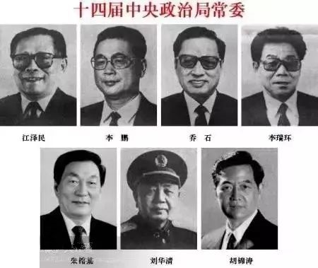十五 1997年9月19日中共第十五次全国代表大会选举产生中共第十五届中央委员选举江泽民为中共中央总书记、中央军委主席，国家主席。
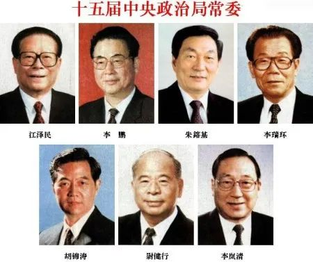十六 2002年11月14日中共第十六次全国代表大会选举产生中共第十六届中央委员会，选举胡锦涛为中共中央总书记，2003年3月15日选举为国家主席，2004年9月十六届四中全会选举为中央军委主席。
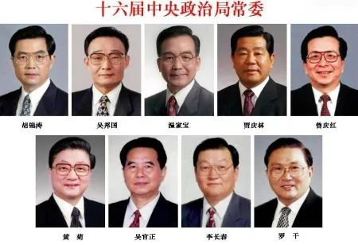十七 2007年10月22日中共第十七次全国代表大会选举产生中共第十七届中央委员会。
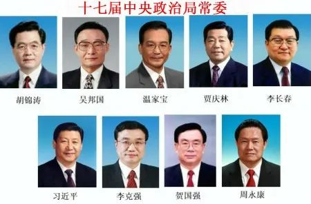十八 2012年11月14日中共第十八次全国代表大会选举产生中共第十八届中央委员会。
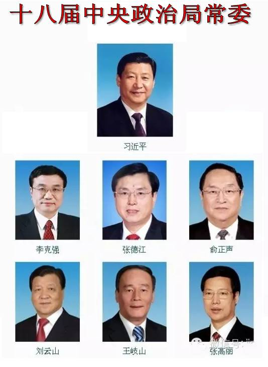十九 2017年10月24日中共第十九次全国代表大会选举产生中共第十九届中央委员会。
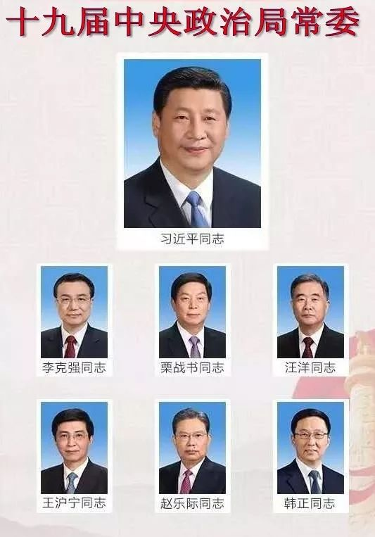二十 2022年10月22日中共第二十次全国代表大会选举产生中共第二十届中央委员会。
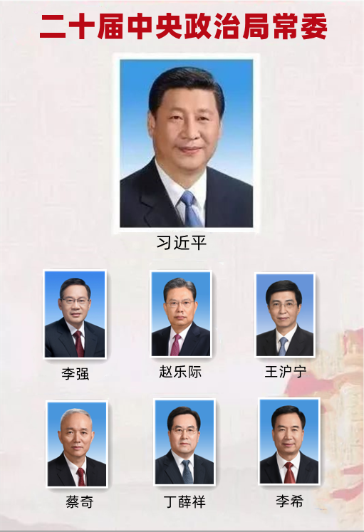中国共产党中央委员会总书记，是中国共产党最高领导人的正式称呼之一。
中国共产党最高领导人的正式称呼，历史上有过几次改变。
一大为中央局书记。
二大三大为中央执行委员会委员长。
四大为中央执行委员会总书记。
五大六大为中央委员会总书记。（六大一说为中央委员会主席）。
从1943年3月20日到1982年十二大为中央委员会主席。
十二大以来为中央委员会总书记。全称为中国共产党中央委员会总书记，简称中共中央总书记，较少称“中国共产党总书记”或“中共总书记”。
八大时期（1956年--1966年）和1980年2月十一届五中全会到1982年9月十二大也有总书记，但主要负责书记处的工作，并不是党的最高领导人。
从1949年中华人民共和国成立起，在中国的政治体制之下，中国共产党最高领导人就是中华人民共和国最高领导人。邓小平曾担任过总书记，但他当时并不是最高领导人。其间，最高领导人为中共中央主席毛泽东。
中共历任最高领导人：
中国共产党第一次全国代表大会决定暂不成立党的中央委员会，先组成中央局，会议选举陈独秀、张国焘、李达3人组成中央局，陈独秀任中国共产党中央局书记，张国焘为组织主任，李达任宣传主任。
中国共产党第二次全国代表大会陈独秀为中国共产党中央执行委员会委员长，陈独秀、李大钊、蔡和森、张国焘、高君宇为中央委员。邓中夏、向警予为候补委员。
中国共产党第三次全国代表大会陈独秀为中国共产党中央执行委员会委员长，中央局组成人员为陈独秀、毛泽东、罗章龙、蔡和森、谭平山（后因谭平山调任驻粤代表，9月补入王荷波）5人组成。
中国共产党第四次全国代表大会陈独秀任中国共产党中央执行委员会总书记，陈独秀、彭述之、张国焘、蔡和森、瞿秋白组成中央局并驻中央局。
中国共产党第五次全国代表大会陈独秀任中国共产党中央委员会总书记。周恩来为秘书长（未到任前，由蔡和森代理）；陈独秀、蔡和森、李立三、李维汉、瞿秋白、谭平山、张国焘7 人为中央政治局委员。
中国共产党第六届中央委员会向忠发任中国共产党中央委员会总书记。（一说为政治局主席兼中央常委主席）中央政治局常务委员会由苏兆征、向忠发、项英、周恩来、蔡和森5名正式委员和李立三、徐锡根、杨殷3名候补委员组成。
1943年3月20日毛泽东任中国共产党中央委员会主席、政治局主席、书记处主席。
中国共产党第七届中央委员会主席毛泽东
中国共产党第八届中央委员会主席毛泽东
中国共产党第九届中央委员会主席毛泽东
中国共产党第十届中央委员会主席：
毛泽东（1973年8月30日－1976年9月9日）
华国锋（1976年10月7日－1977年8月18日）
中国共产党第十一届中央委员会主席：
华国锋（1977年8月19日－1981年6月28日）
胡耀邦（1981年6月29日－1982年9月11日）
中国共产党第十二届中央委员会总书记：
胡耀邦（1982年9月12日－1987年1月15日）
赵紫阳（1987年1月16日－1987年11月1日）（代理）
中国共产党第十三届中央委员会总书记：
赵紫阳（1987年11月2日－1989年6月23日，实际上-5月19日）
江泽民（1989年6月24日－1992年10月18日）
中国共产党第十四届中央委员会总书记江泽民
中国共产党第十五届中央委员会总书记江泽民
中国共产党第十六届中央委员会总书记胡锦涛
中国共产党第十七届中央委员会总书记胡锦涛
第一届全国人民代表大会常务委员会委员长：刘少奇(1954年9月-1959年4月)
第二届全国人民代表大会常务委员会委员长：朱德(1959年4月-1965年1月)
第三届全国人民代表大会常务委员会委员长：朱德(1965年1月-1975年1月)
第四届全国人民代表大会常务委员会委员长：朱德(1975年1月-1978年3月)（1976年朱德逝世后，人大委员长一直空缺到第五届）
第五届全国人民代表大会常务委员会委员长：叶剑英(1978年3月-1983年6月)
第六届全国人民代表大会常务委员会委员长：彭真(1983年6月-1988年4月)
第七届全国人民代表大会常务委员会委员长：万里(1988年4月-1993年3月)
第八届全国人民代表大会常务委员会委员长：乔石(1993年3月-1998年3月)
第九届全国人民代表大会常务委员会委员长：李鹏(1998年3月-2003年3月)
第十届全国人民代表大会常务委员会委员长：吴邦国(2003年3月至今 )
中华人民共和国国务院总理为中华人民共和国政府首脑。每届任期为五年，连续任职不得超过两届。总理负责召集和主持国务院常务会议和国务院全体会议，根据宪法对国务院赋予的职权行事。
总理产生程序：国家主席提名，交全国人民代表大会通过，再由国家主席任免。
政务院总理：周恩来 (1949年10月1日至1954年9月，当时称为“政务院”总理，之后为“国务院”总理)
第一届国务院总理：周恩来（1954年9月至1959年4月）
第二届国务院总理：周恩来 (1959年4月至1965年1月)
第三届国务院总理： 周恩来 (1965年1月至1975年1月)
第四届国务院总理：周恩来 (1975年1月至1976年1月8日)
代总理：华国锋 （1976年2月4日至1976年4月7日）
总理：华国锋 （1976年4月7日至1978年3月）
第五届国务院总理：华国锋 （1978年3月至1980年9月10日）
总理：赵紫阳（1980年9月10日至1983年6月）
第六届国务院总理：赵紫阳（1983年6月至1987年11月24日）
代总理：李鹏 （1987年11月24日至1988年3月25日）
第七届国务院总理：李鹏（1988年3月25日-1993年3月）
第八届国务院总理：李鹏 （1993年3月-1998年3月17日）
第九届国务院总理：朱镕基（1998年3月17日-2003年3月16日）
第十届国务院总理：温家宝（2003年3月16日--2008年3月）
第十一届国务院总理：温家宝（2008年3月16日开始）
中华人民共和国主席，是中华人民共和国国家机构的组成部分，是国家机构中的一种。自1954年开始设立。主席和全国人大常委会结合行使国家元首的职权，它对外代表国家。根据中华人民共和国宪法，主席由全国人民代表大会根据宪法第六十二条选举产生，任期五年，最多可连任两届，根据宪法规定：国家主席必须是年满45周岁并有选举权及被选举权的中华人民共和国公民，在实践上则同时中国共产党中央政治局委员以上的高级干部。
宪法第三章第二节界定了主席的职责与义务。主席的主要权力包括，根据全国人大和其常委会的决定公布法律、任免国务院总理和国务院其它组成人员、发布特赦令、宣布进入紧急状态、动员令、授予国家勋章；代表中华人民共和国从事国事活动，接受外国使节、批准或废除与外国缔约等。
按宪法，主席职务仅仅是象征性的国家的元首。如果主席同时任别的职务，其实际权力则来自其他职务，自杨尚昆开始，国家主席一般都兼任中央军委主席或副主席。
根据中华人民共和国宪法规定：如果国家主席出缺，由国家副主席继任；如果正副主席都出缺，则由全国人大常委会委员长代理主席职位至新的国家正副主席人选产生为止。
历任国家主席：
中华人民共和国中央人民政府主席：
毛泽东（1949年10月1日-1954年9月27日）
中华人民共和国主席：
毛泽东（1954年9月27日-1959年4月27日）
刘少奇（1959年4月27日-1968年10月31日）
宋庆龄，董必武（1968年10月31日-1972年2月24日）（副主席代行主席的职权）
董必武（1972年2月24日-1975年1月17日）（以代主席名义行主席职权）
中华人民共和国名誉主席：
宋庆龄（1981年5月16日授予）
中华人民共和国主席（1982年以后）：
李先念（1983年6月18日-1988年4月8日）
杨尚昆（1988年4月8日-1993年3月27日）
江泽民（1993年3月27日-2003年3月15日）
胡锦涛（2003年3月15日-）
中央军委主席，是中央军委的最高职务。
1982年起，中华人民共和国宪法规定国家设立中央军事委员会，至此，形式上存在两个中央军事委员会，即中华人民共和国中央军事委员会和中国共产党中央军事委员会，但是两会的主席（又分别称中共中央军委主席和国家军委主席）和第一副主席除了过渡时期外均为相同的人选。
由于中国社会的特有政治生活背景，中央军委主席一职的人选一般标志着一个统治时代的开始和终结，尽管理论上军委主席只是中国的最高军事统帅，实际上多数为中国的最高领导人或掌握实权的人。
中华人民共和国成立以后，在毛泽东时代，由毛泽东担任军委主席；在邓小平时代，过渡时期由华国锋担任，之后邓小平担任直至1989年，随后就是江泽民时期或称后邓小平时代。
客观上在中国，军事权力在政权完全稳定以后，中共中央主席（总书记）、国家主席和军委主席均由一人兼任。在政权的过渡时期，中共中央总书记、国家主席有时由一个人兼任，军委主席由实权人担任。如邓小平主政后最高职务为军委主席，期间胡耀邦、赵紫阳和江泽民先后担任党的总书记。1993年以后，江泽民集国家主席、党的总书记和军委主席三职于一身，其中1989年6月接替赵紫阳为党的总书记、1989年9月接替邓小平为军委主席、1993年接替杨尚昆为国家主席。
如现任国家主席、中共中央总书记胡锦涛为中共中央军委主席。在2005年3月的全国人民代表大会上，胡锦涛当选为中华人民共和国国家中央军委主席。
毛泽东（1949年-1976年）
华国锋（1976年-1981年）
邓小平（1981年-1989年11月7日）
江泽民（1989年11月7日-2004年9月19日）
胡锦涛（2004年9月19日至今）
第一任外交部长--- 周恩来（1949-1958）
第二任外交部长----陈毅(1958～1972)
第三任外交部长----姬鹏飞（1972-1974）
第四任外交部长----乔冠华（1974.11-1976.12）
第五任外交部长----黄华（曾用名王汝梅）（1976.12-1982.11）
第六任外交部长----吴学谦（1982.11-1988.4）
第七任外交部长----钱其琛（1988.4～1998.3）
第八任外交部长----唐家璇（1998.3.18～2003.3 ）
第九任外交部长----李肇星（2003.03.17-2007.04.27 ）
第十任外交部长----杨洁篪（2007.04.27-- ）
ref